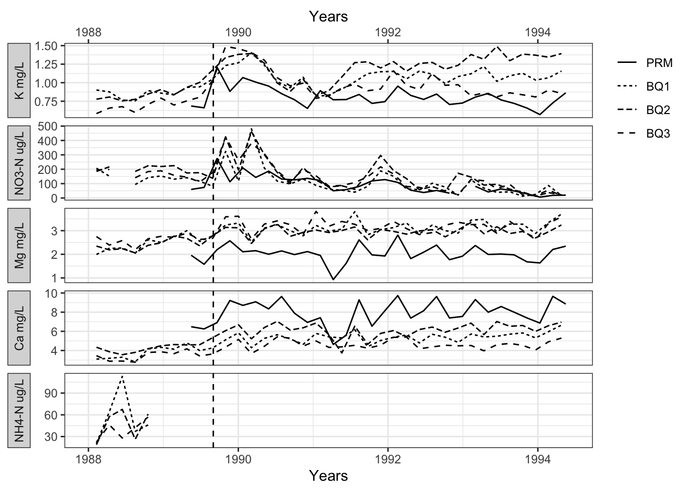
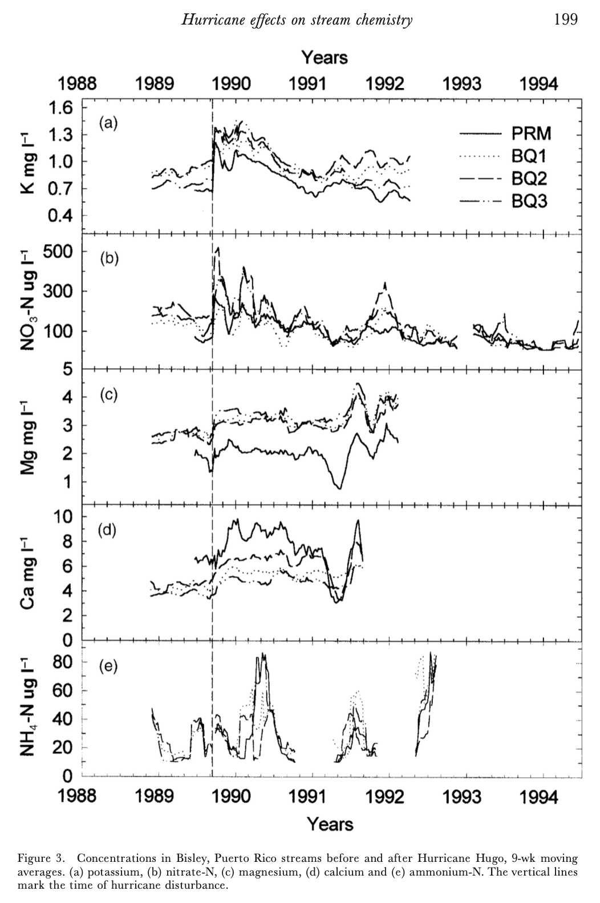

EDS214 Final Project: Figure Reproducibility
Background
The following is the final project analysis for EDS214. The main goal for this project was to replicate Figure 3 from Schaefer et al. (2000) through the implementation of coding techniques learned in this class, including code automation, organization, documentation, and collaboration methods. Figure 1 below shows Figure 3 with the corresponding figure caption from the original Schaefer et al. (2000) publication. In this figure from the original publication, multiple stream sites in Puerto Rico were measured for ion concentrations before and after Hurricane Hugo in September 1989.

Figure 1: The original Figure 3 from Schaefer et al. (2000) depicting the concentrations of 5 measured ions - K, NO3-N, Mg, Ca, and NH4-H - across 4 stream sites in Puerto Rico before and after Hurricane Hugo in September 1989.Data
The four data sets downloaded from McDowell et al. (2024) corresponded to each of the 4 sites measured for the original Schaefer et al. (2000) publication: QuebradaCuenca1-Bisley.csv (BQ1), QuebradaCuenca2-Bisley.csv (BQ2), QuebradaCuenca3-Bisley.csv (BQ3), and RioMameyesPuenteRoto.csv (PRM). The fifth raw data file - LUQ LTER MDLs.csv - was only used as a reference for the unit type per ion measured, and is not directly included in this analysis.
Methods
For each site data set, the moving average was calculated across a 9 week measurement window for each of the five ions - K (mg/L), NO3-N (ug/L), Mg (mg/L), Ca (mg/L), and NH4-H (ug/L). The resulting site data sets with this ion data transformation were combined into a single combined “smoothed” data set. This smoothed data set was then filtered to only include measurements taken in years relevant to the original Schaefer et al. (2000) Figure 3 - 1988 to 1995 - and the Sample ID column was updated to use “PRM” for the RioMameyesPuenteRoto.csv data.
Results
The ion concentration moving averages from the filtered, smoothed, and combined data set were plotted in Figure 2 below as a line graph. Each plot row is a single ion - K (mg/L), NO3-N (ug/L), Mg (mg/L), Ca (mg/L), and NH4-H (ug/L) - with the data from each site denoted by different line types - PRM, BQ1, BQ2, and BQ3. Hurricane Hugo - which occurred in September 1989 - is marked by a vertical dashed line across all ion plots. The reproduced figure depicted in Figure 2 is mostly identical to the original Schaefer et al. (2000) Figure 3 in terms of design and format, and most of the data appears similar in shape according to the line plots. The NH4-H data for the plotted sites - downloaded from McDowell et al. (2024) - is more sparse compared to the NH4-H data the Schaefer et al. (2000) publication likely used.
Figure 2: Replicated version of Schaefer et al. (2000) Figure 3 generated for this project. Each ion - K (mg/L), NO3-N (ug/L), Mg (mg/L), Ca (mg/L), and NH4-H (ug/L) - has an independent plot, while each site - PRM, BQ1, BQ2, and BQ3 - is represented on each plot by a specific line type. Hurricane Hugo in 1989 is marked with a dashed vertical line.
References
McDowell, William H., and USDA Forest Service. International Institute Of Tropical Forestry (IITF). 2024. “Chemistry of Stream Water from the Luquillo Mountains.” Environmental Data Initiative. https://doi.org/10.6073/PASTA/F31349BEBDC304F758718F4798D25458.
Schaefer, Douglas. A., William H. McDowell, Fredrick N. Scatena, and Clyde E. Asbury. 2000. “Effects of Hurricane Disturbance on Stream Water Concentrations and Fluxes in Eight Tropical Forest Watersheds of the Luquillo Experimental Forest, Puerto Rico.” Journal of Tropical Ecology 16 (2): 189–207. https://doi.org/10.1017/s0266467400001358.